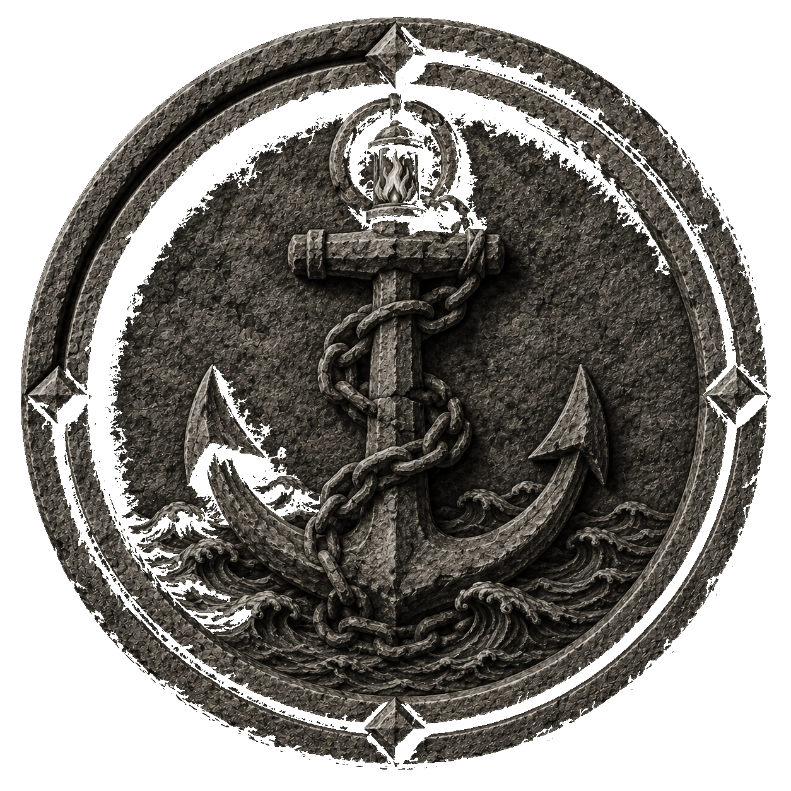
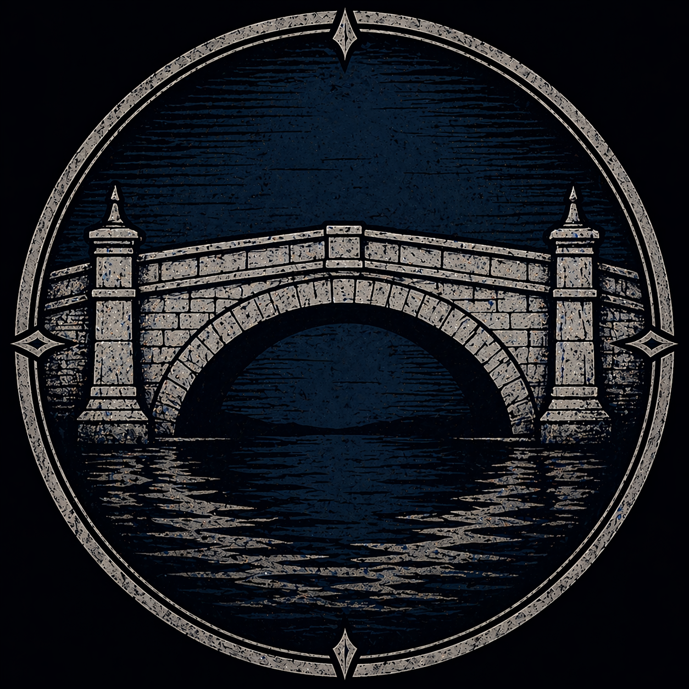
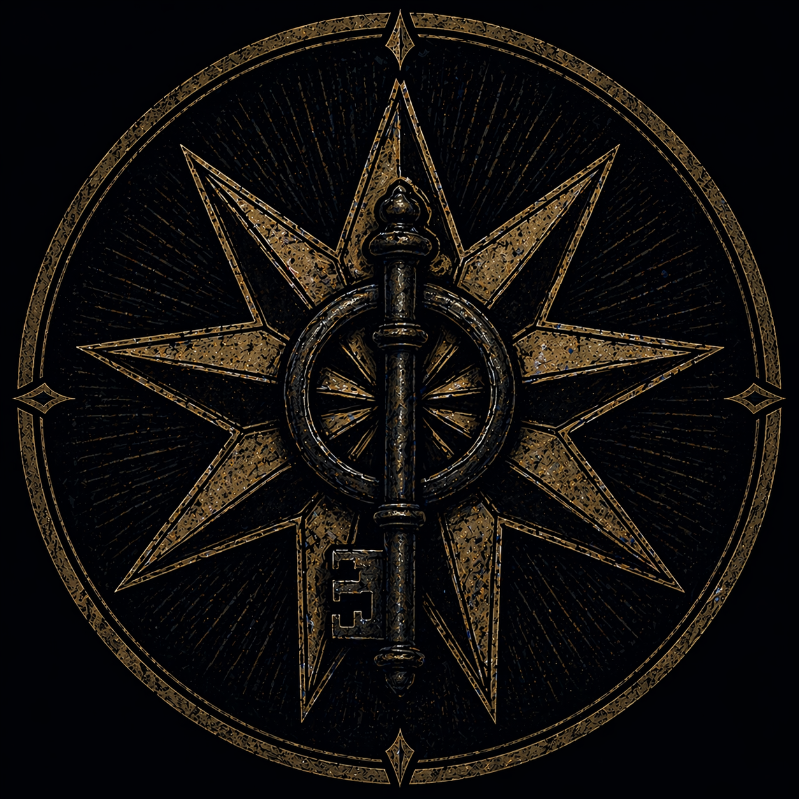
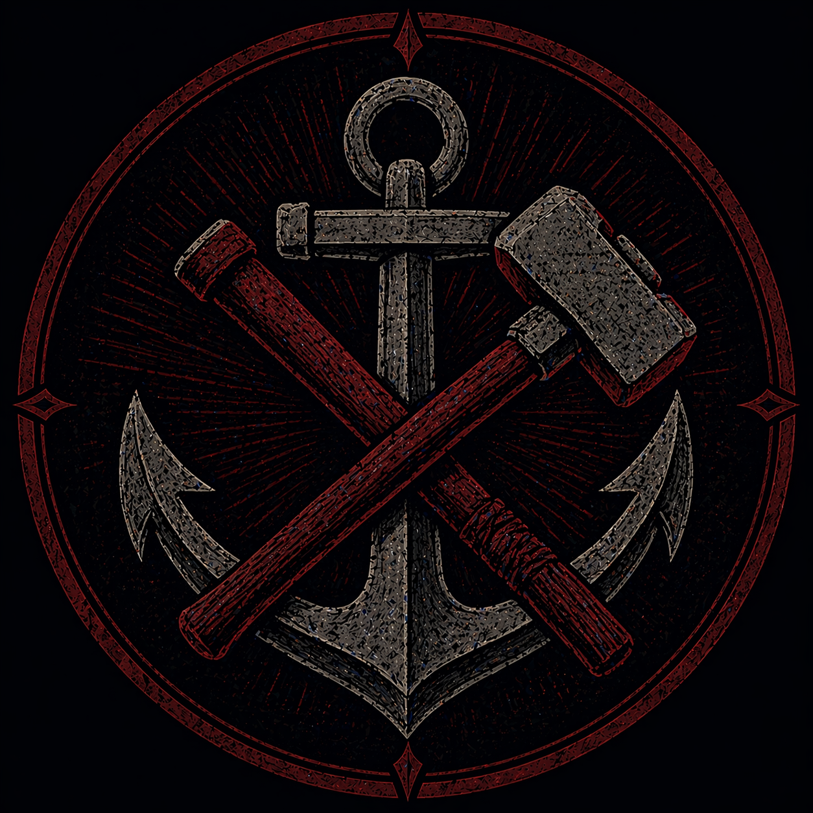
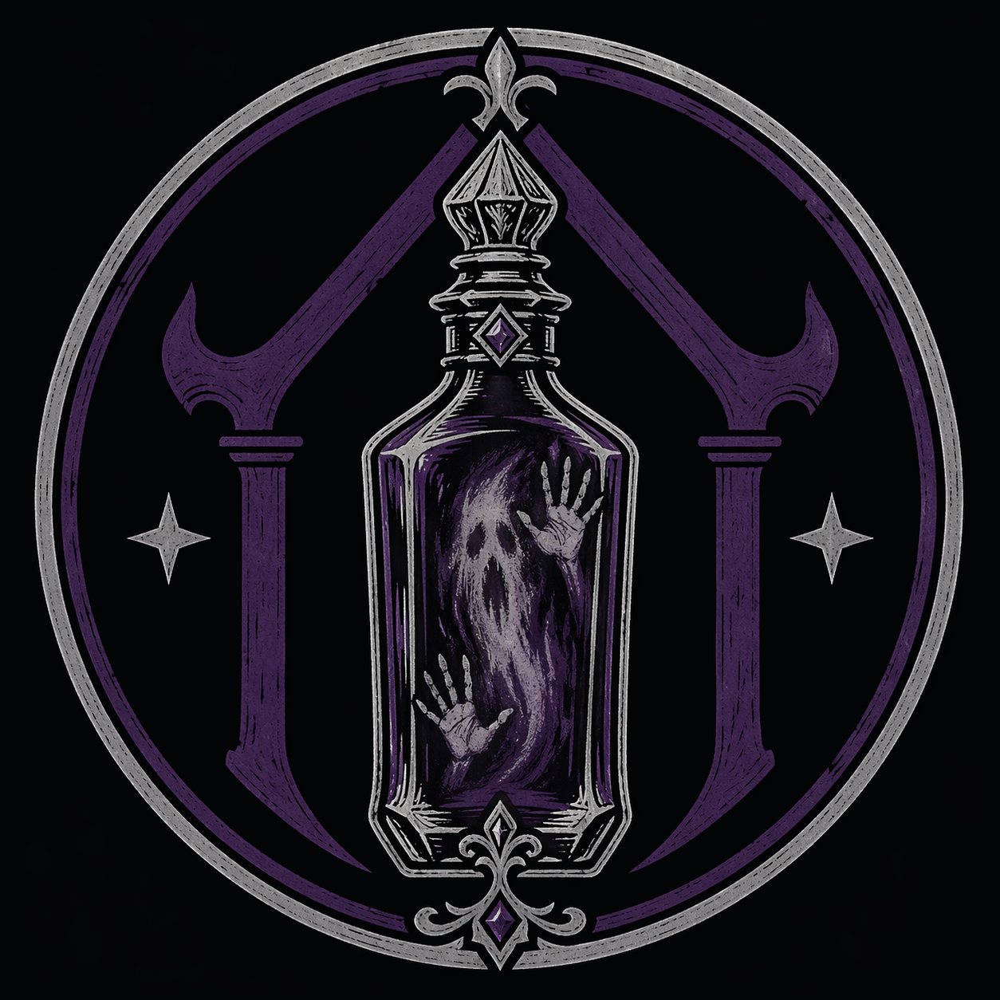
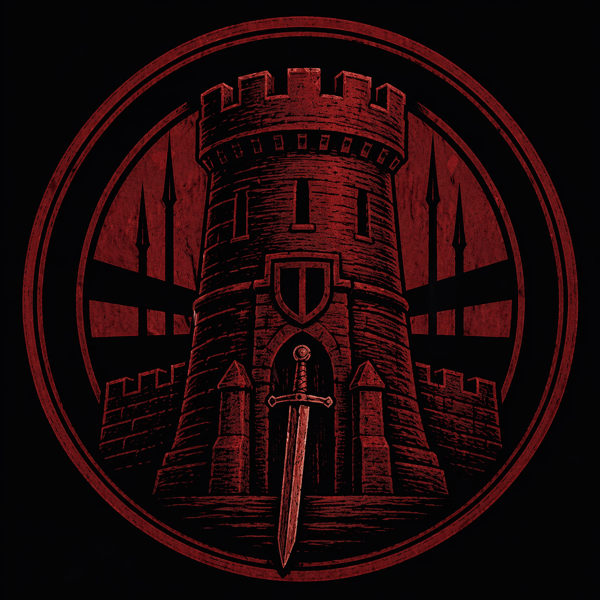
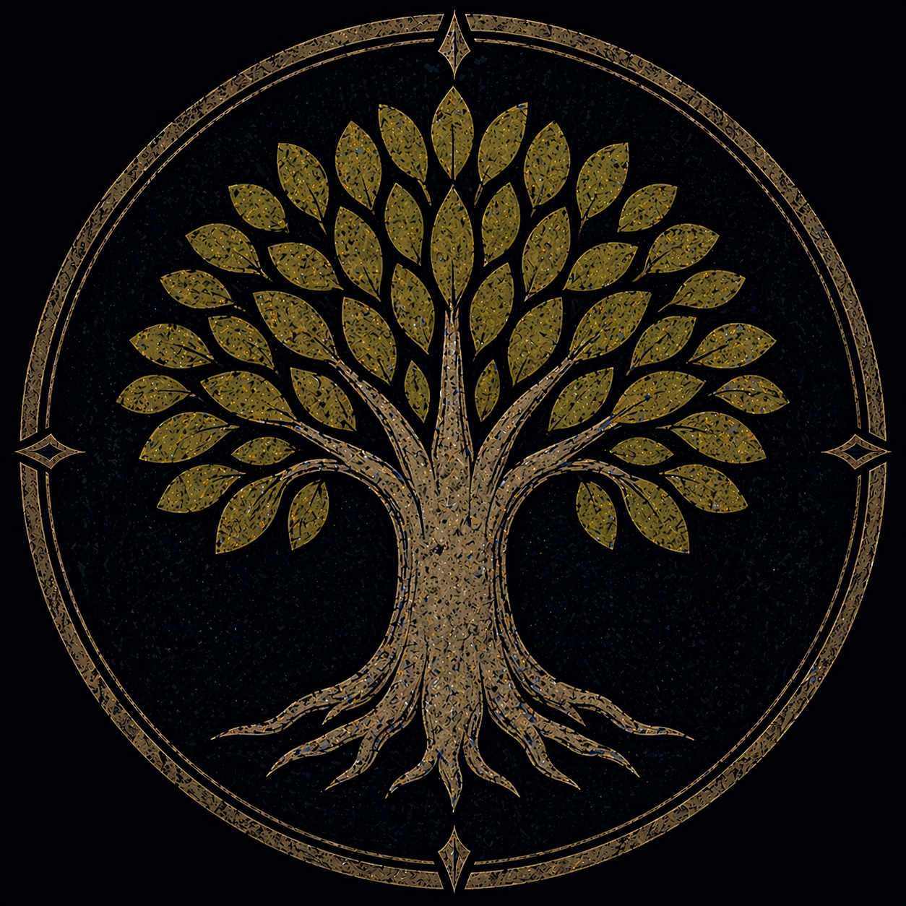
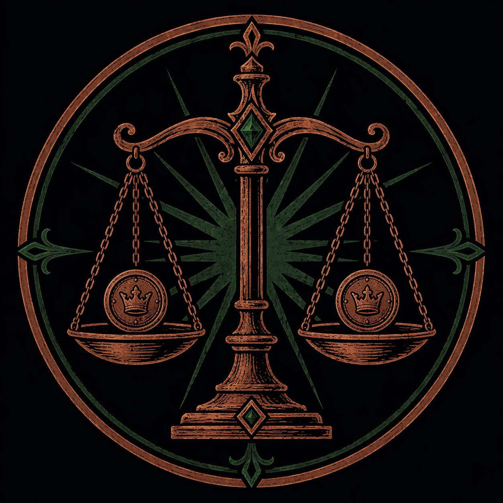
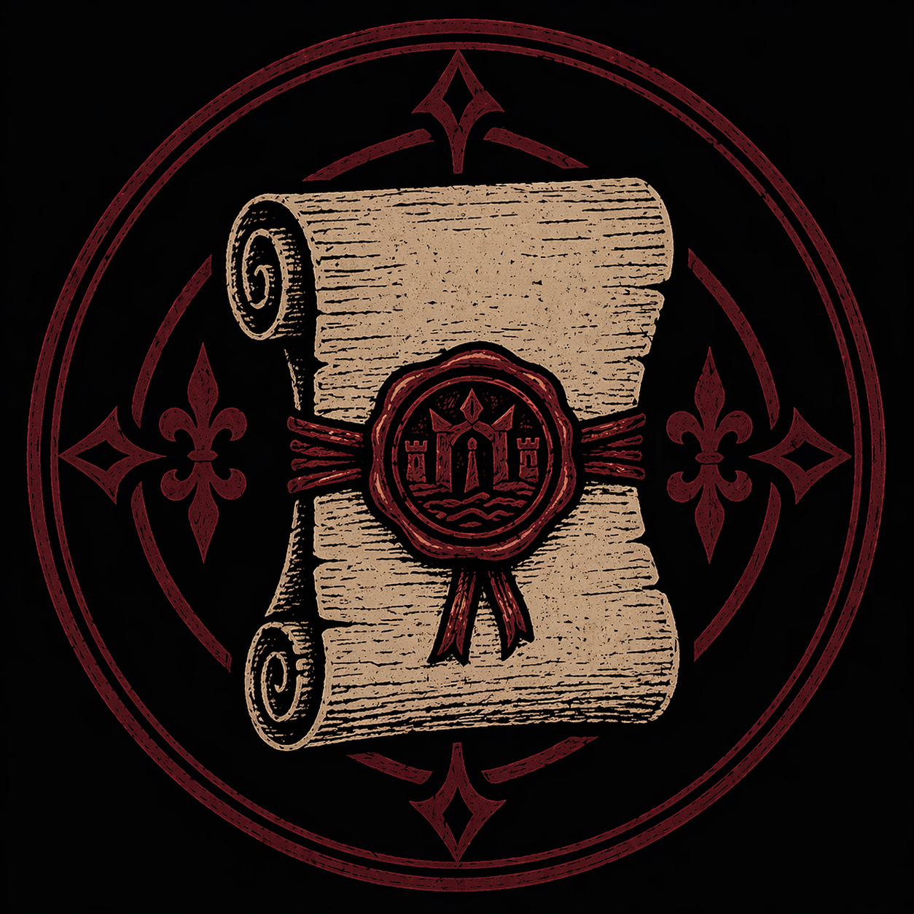
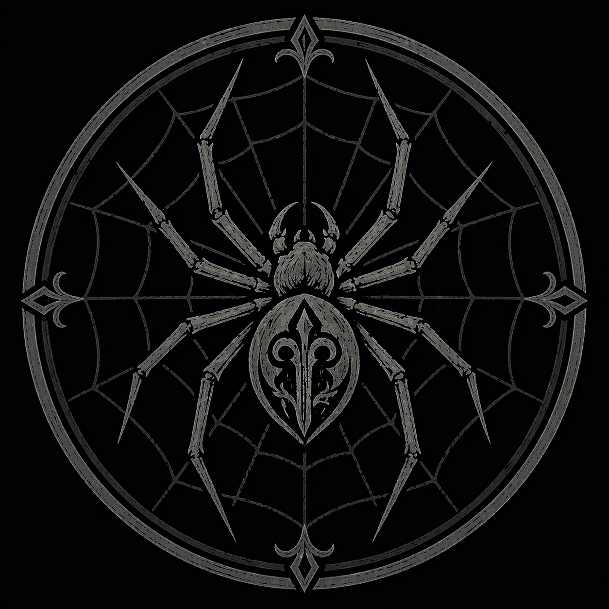

Noble Houses of Doskvol
Six families hold the city's real power � by fleet, by badge, by blood.
The City Council
Six noble families hold permanent seats on the City Council, which controls legislation, the city treasury, and most civic appointments. The Lord Governor has imperial authority � but he depends on the Council to function. Real local power flows through these six houses, not through the Governor's office. Every significant decision in Doskvol runs through their interests first.
The Six Houses

Lord Erul Strangford is the most powerful single noble in the city, possibly second only to the Lord Governor. His family operates the largest leviathan hunter fleet on the continent � the blood trade is his empire. His private island estate is visible from across the city on moonlit nights; the location is ostentatious by design. Three of the other Council houses are currently working to remove him from his seat. He is not unaware of this. The household extends beyond the immediate family � Lady Veyra Strangford, a widow by marriage, has since established her own position within the Department's upper administration.

Lady Bowmore holds the Council seat. Commander Bowmore runs the City Watch in Brightstone � the only district where the Bluecoats behave like actual law enforcement. The family financed Bowmore Bridge centuries ago � described as the largest bridge in the Imperium, bright white stone and shimmering metalwork � and their name is still on it. Their manor estate is one of Brightstone's oldest, predating most of the district's current architecture. Aligned against Strangford.

Commander Arvus Clelland is Chief Commissioner of the City Watch � the Bluecoats answer to him, which tells you most of what you need to know about the Bluecoats. Described plainly as corrupt, cruel, and dismissive. The Clelland Council seat means the family controls civil law enforcement city-wide. They use this. Aligned against Strangford.

Grand Admiral Dunvil commands the Imperial Navy. The family also operates Dunvil Ironworks � significant industrial manufacturing capacity tied to shipbuilding and military supply. Naval control means leverage over sea trade and the leviathan hunter supply lines. Dunvil plays a careful political game; they are neither firmly in the anti-Strangford bloc nor openly allied with him.

Lord Penderyn is Chief Scholar of the Archive of Echoes � an institution authorized by the Emperor to maintain a collection of ancient ghosts trapped in spirit bottles. He is described as reckless and strange even by the standards of Doskvol's nobility. The house has deep occult scholarship and an unusual relationship with the dead that makes them simultaneously prestigious and suspect in Brightstone parlors. Outside the Council's factional conflict � too unpredictable to be a reliable ally for either side.

General Rowan commands the city's land army. Colonel Evelina Rowan commands the Lord Governor's stronghold in Whitecrown. Their manor estate in Whitecrown looks like an ancient castle � moat, drawbridge, arrow-slit windows. The family rules their holdings from within, rarely venturing out. Combined with Clelland's control of the Watch and Bowmore's Brightstone presence, the Bowmore-Clelland-Rowan bloc controls both civil and military enforcement. Aligned against Strangford.
The Social World
The stage is Brightstone � grand houses, the Sanctorium, Doskvol Academy events, invitation-only gatherings at noble estates. Moving in these circles requires the right name, the right clothes, and current knowledge of which alliances are operating. A wrong assumption about who is friends with whom this season is a social disaster. The right assumption is currency.
The Bowmore-Clelland-Rowan bloc is actively working to remove House Strangford from the Council � long-running, patient, and not yet resolved. Dunvil is the swing vote; they know it and price it accordingly. Penderyn is outside the conflict entirely. Anyone operating in Brightstone social circles is expected to know this and navigate accordingly. Picking a side publicly is a commitment. Not picking a side is also a move.
The Blood Trade
Each noble house owns vessels in the leviathan hunter fleet. Strangford's is the largest on the continent, but every house with Council ambitions maintains a presence in the fleet � it is the foundation of the city's electroplasm economy and therefore the foundation of all other power. Hunter officers receive elite training at Doskvol Academy. The hunting season runs late spring through early fall.
The hunting grounds are going barren � leviathans are migrating or disappearing. The Ministry of Preservation is using this crisis to argue for government control over the fleet, framing the noble houses as too distracted by their rivalries to manage the city's survival. The houses are not taking this well.
Notable Gentry
Below the six Council families sits a tier of noble gentry � houses with titles, old names, and varying degrees of real influence. They don't hold Council seats, but they move in the same social circles, attend the same events, and are treated as peers rather than commoners. Their power is softer, more social, more contingent � and occasionally more interesting for it.

The Dalmorrian name carries weight in Brightstone that the family's current position doesn't fully explain. They are respected as old gentry � not Council-tier, but clearly from older stock than the merchant class. What they were involved in at the city's founding is not clearly recorded in common-access history. Those who have seen the family archive describe correspondence and documents going back centuries, suggesting involvement in pre-Cataclysm civic institutions at a level most gentry families cannot match. Whether the family ever held a Council seat, and what happened to it if they did, is not a story anyone currently tells. Alaric carries this name. His uncle Jared carries it too. Neither has been told what it means.

House Quellin's title is only two generations old, purchased when the family's commercial enterprises � import trade through Nightmarket, manufacturing contracts, a fleet of smaller cargo vessels � grew large enough to make the transaction practical. They have money in a quantity the older gentry find quietly embarrassing. What they lack is the social weight that only a name with centuries behind it can provide. The current head of the family has made no secret of his interest in an arrangement with House Dalmorrian: the Quellin wealth is real and growing; the Dalmorrian name is old enough to open rooms a Quellin fortune alone cannot. The Dalmorrian family, for their part, has been receptive. Anya Quellin is the arrangement's most visible expression.

A minor noble house with a peculiar kind of influence. House Valchek does not command armies or control leviathan fleets � they hold deeds. Centuries of accumulated property titles, water rights, transit easements, and legal instruments, many of them predating the current city's administrative structures. The city grew around their holdings without ever quite buying them out. They collect fees and royalties across dozens of sources: a levy on canal transit past a particular lock, a percentage on a market square's commerce, a nominal charge on a road that crosses an ancestral boundary. Individually trivial. Accumulated over centuries, it constitutes quiet and reliable power that requires no soldiers to maintain. Most of their meaningful assets have been sold, reassigned, or quietly absorbed by the City Council over the past few decades. What remains is a fragmented portfolio of obsolete rights — not valuable enough for anyone to bother contesting, but still technically valid. The house is headed by Lord Edric Valchek — late sixties, polite, forgettable, tired. He signs documents and attends functions. He has largely delegated operational management to his house factor and has no idea that some of the instruments he holds are more significant than they appear. The house produces lawyers, record-keepers, and investigators rather than officers. Marla Vale is the person who actually keeps it running.

Officially, House Scurlock no longer exists as an active noble line. The house fell � how and when is not clearly recorded in any source most people have access to. What persists is harder to explain: a manor in Six Towers still bearing the Scurlock name, holdings and properties scattered across the city, trusts and endowments that predate the current city's administrative memory, and a position at certain private tables that was never formally revoked. The family name carries weight in rooms where old power congregates, even if no one can currently say why. Lord Scurlock moves through Doskvol as though none of this requires explanation. He is not wrong.
The Ministry of Preservation
The Ministry of Preservation is not a noble house � it is an Imperial administrative body, appointed by the Crown rather than hereditary. Its stated mandate is managing the city's electroplasm supply and overseeing leviathan hunting operations, framed as environmental stewardship in a city whose economy depends entirely on a dwindling resource. As the hunting grounds go barren, the Ministry has used the crisis to argue for expanded authority: first over fleet operations, then over the refinery schedule, then over the noble houses' independent hunting licenses. Each expansion is framed as emergency necessity. None of them have been reversed.
The Ministry's weapon is regulatory authority. A Ministry official with the right stamp can hold a leviathan hunter fleet in port on inspection grounds. They can reject a noble house's harvest report and demand an audit. They can approve or deny the permits required to operate the radiant energy growing operations that feed the city. Individually, any of these powers seems administrative. Collectively, they constitute leverage over the city's food supply and its primary energy source. The noble houses understand this clearly. Their current response � loud objection in Council sessions, quiet maneuvering in back channels � has not yet produced an effective counterweight.
The Ministry's allies include the Hive, the Dagger Isles Consulate, and the Church of the Ecstasy. Their foothold in Barrowcleft � where they oversee the radiant growing operations � gives them material leverage over the city's food supply entirely separate from the leviathan question. The noble houses have noticed. They do not yet have a clean answer for it.
House Secrets
House Dalmorrian was one of the original six noble houses that signed the harbor compact with the Watcher. Their seal is one of the three still intact in the Drowned Ledger. This connection has been obscured � not through active conspiracy so much as centuries of institutional forgetting, the compact's existence itself fading from common knowledge as the six original houses' names were never formally attached to it in any surviving public record. The current Dalmorrian estate almost certainly contains documents that would confirm this, buried in correspondence most of the family has never read. Alaric felt the Ledger respond to him on the ghost train. He doesn't know why. Jared is the same house and the same bloodline � one seal covers both of them. Both are living signatories without knowing it. Jared is the easier target. A downtime action researching family records � or an encounter with a source who knows pre-Cataclysm civic history � could surface this for either of them.
The Church of the Ecstasy of the Flesh has a public face (honor bodily life, abhor corrupted spirits) and a secret inner order pursuing "ascension" � literally attempting to become demons through experimental ritual. They regard demons as perfect and immortal beings. Strangford is a high-ranking adept in this order. The cathedral's catacombs host ongoing experiments.
Members of House Rowan are secretly descended from "the Others" � a pre-Cataclysm or non-human lineage. The rulebook is deliberately cryptic about what this means; "the Others" may refer to demonic, supernatural, or pre-human bloodlines. The information is politically explosive. The family's fortress-within-a-fortress architecture is not purely aesthetic.
On his own initiative, Lord Penderyn founded the Path of Echoes � a clandestine society of nobles, scholars, and elites who seek direct communion with trapped spirits. This borders on open rebellion against the Spirit Wardens' monopoly on ghost interaction. Membership includes elites from across the city. The Spirit Wardens are aware of it. They are not pleased.